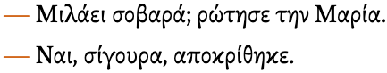

This page brings together basic information about the Greek script and its use for the modern Greek language. It aims to provide a brief, descriptive summary of the modern, printed orthography and typographic features, and to advise how to write Greek using Unicode.
Phonetic transcriptions on this page should be treated as an approximate guide, only. Many are more phonemic than phonetic, and there may be variations depending on the source of the transcription.
Select part of this sample text to show a list of characters, with links to more details. Change size: 28px
ΑΡΘΡΟ 1 Όλοι οι άνθρωποι γεννιούνται ελεύθεροι και ίσοι στην αξιοπρέπεια και τα δικαιώματα. Είναι προικισμένοι με λογική και συνείδηση, και οφείλουν να συμπεριφέρονται μεταξύ τους με πνεύμα αδελφοσύνης.
ΑΡΘΡΟ 2 Κάθε άνθρωπος δικαιούται να επικαλείται όλα τα δικαιώματα και όλες τις ελευθερίες που προκηρύσσει η παρούσα Διακήρυξη, χωρίς καμία απολύτως διάκριση, ειδικότερα ως προς τη φυλή, το χρώμα, το φύλο, τη γλώσσα, τις θρησκείες, τις πολιτικές ή οποιεσδήποτε άλλες πεποιθήσεις, την εθνική ή κοινωνική καταγωγή, την περιουσία, τη γέννηση ή οποιαδήποτε άλλη κατάσταση. Δεν θα μπορεί ακόμα να γίνεται καμία διάκριση εξαιτίας του πολιτικού, νομικού ή διεθνούς καθεστώτος της χώρας από την οποία προέρχεται κανείς, είτε πρόκειται για χώρα ή εδαφική περιοχή ανεξάρτητη, υπό κηδεμονία ή υπεξουσία, ή που βρίσκεται υπό οποιονδήποτε άλλον περιορισμό κυριαρχίας.
Usage & history
The Greek alphabet is used to write the Greek language, which is spoken by around 13 million people worldwide. About 11 million are in Greece, and a further million in Cyprus, but other Greek-speaking communities are spread around the world in places such as Australia, Albania, Italy, etc.
Greek letters are also widely used for technical symbols in mathematics and science, as well as the international phonetic alphabet (IPA).
Ελληνικό αλφάβιτοEllinıkó alfávıtoGreek alphabet
The Greek alphabet was derived from the Phoenician around the 8th-9th century BCE. The Greeks added letters for vowels to their script, creating the first alphabet, and the ancestor of the Latin, Cyrillic and Coptic scripts.
There were initially a number of variants of the alphabet, including principally Chaldician, from which Old Italic and Latin alphabets descended, and Ionic, which led to the Greek in use today and Cyrillic.
Greek is an alphabet. Letters typically represent a consonant or vowel sound. See the table to the right for a brief overview of features for the modern Greek orthography.
Modern Greek comes in 2 flavours: monotonic and polytonic. Monotonic Greek generally uses only the tonos diacritic to show the location of emphasis in a word, although it may also use the dialytika occasionally to separate vowel sounds. Polytonic Greek attaches multiple diacritics more often.
Greek letters are in a sense encoded twice, since there is a sizeable set of precomposed characters, but it is also always possible to write equivalent decomposed sequences.
Greek text runs left-to-right in horizontal lines.
Words are separated by spaces.
The script is bicameral. The shapes of the upper and lowercase forms are typically the same.
Modern Greek has 17 consonant letters, plus a special lowercase, word-final form of the letter sigma.
There are 7 basic vowel letters, but they are commonly combined to produce additional sounds, and can take tonos and/or dialytika diacritics. Polytonic Greek can be found occasionally in modern texts, and that adds another 110 combinations of vowel plus diacritic to the repertoire.
Numbers use ASCII digits.
The visual forms of letters don't usually interact.
The Greek combining marks are only present in decomposed text.
Punctuation
Show·␣«␣»␣‐␣‑␣–␣—␣“␣”␣‘␣’␣…␣͵␣ʹ
ASCII
,␣.␣:␣;␣!␣(␣)␣/
Not used for modern Greek
;␣·␣ʹ
Possible
§
Symbols
€
Character lists show:
Phonology
These are sounds for the modern Greek language.
Click on the sounds to reveal locations in this document where they are mentioned.
Phones in a lighter colour are non-native or allophones. Source Wikipedia.
Vowel sounds
Consonant sounds
labial
dental
alveolar
post-
alveolar
palatal
velar
glottal
stop
pb
td
cɟ
kɡ
affricate
t͡sd͡z
fricative
fv
θð
sz
çʝ
xɣ
nasal
mɱ
n
ɲ̟
ŋ
approximant
lɹ
jʎ
trill/flap
rɾ
Vowels
Click on the characters in the lists for detailed information. For a mapping of sounds to graphemes see vowel_mappings.
Basic vowels
The basic set of vowels used in modern Greek includes the following.
Ιι␣Υυ␣Ηη␣Εε␣Οο␣Ωω␣Αα
Digraphs
In Greek, pairs of vowel letters may represent a single sound, or something other than two consecutive basic vowel sounds. These spellings hark back to Classical Greek.
These are vowels written as digraphs in modern Greek.
ει␣οι␣υι␣ου␣αι
Three more digraphs are pronounced with v before a vowel or voiced consonant, and f elsewhere.
ηυ␣ευ␣αυ
Polytonic Greek has additional digraphs involving iota.
Monotonic vowel diacritics
Tonos
Stressed syllables carry a tonos diacritic. This can be written by following the above vowel characters with ́ [U+0301 COMBINING ACUTE ACCENT], but Unicode also has a set of precomposed characters.
Ήή␣Ύύ␣Ίί␣Όό␣Ώώ␣Έέ␣Άά
The diacritic appears to the left of the uppercase letters. (The uppercase letters shown here are only used if the first letter of a word is capitalised and that letter happens to be a vowel with a tonos. If the whole word is uppercased, the tonos is dropped. See transforms.)
If the stress falls on a digraph, the second letter carries the tonos, eg.
αίμα
Dialytika
Monotonic Greek on occasion uses a dialytika diacritic to indicate that two adjacent vowel letters don't form a digraph, eg. the first 2 vowels in this example are pronounced ai, rather than eκαϊμάν
Again, it is possible to use ̈ [U+0308 COMBINING DIAERESIS] with the basic vowel or vowel+tonos, or to use one of the following precomposed characters.
Ϊϊ␣Ϋϋ␣ΰ␣ΐ
If the first vowel in what looks like a digraph has a tonos diacritic, this signals that it is not a digraph, and there is no need to use a dialytika, eg.
τρία
Tonos and dialytika may appear together above a vowel that is stressed, in which case the tonos appears either between or above the dialytika, eg.
ευφυΐα
Unlike tonos, dialytika is not dropped for capital letters, but may be produced from a tonos in some circumstances (see transforms).
In polytonic Greek, stressed syllables are identified using one of 3 diacritics: oxia (called tonos in monotonic Greek), varia, or perispomeni. The original distinctions represented by these 3 marks are no longer relevant to modern Greek, and they simply reflect much older spellings. There are precomposed characters for most combinations, but decomposed sequences use ́ [U+0301 COMBINING ACUTE ACCENT] for oxia and ̀ [U+0300 COMBINING GRAVE ACCENT] for varia. Perispomeni can be rendered as a circumflex, a tilde, or occasionally a macron, so a special code point is available for it: ͂ [U+0342 COMBINING GREEK PERISPOMENI].
A vowel that begins a word carries one of two breathing marks, where the rough breathing mark (dasia) indicates the presence of h, and the smooth (psili) its absence. (h is no longer used in modern Greek.) ̔ [U+0314 COMBINING REVERSED COMMA ABOVE] represents the rough breathing mark, and ̓ [U+0313 COMBINING COMMA ABOVE] the smooth breathing mark. The code point ̓ [U+0343 COMBINING GREEK KORONIS] also represents the smooth breathing mark, but exists for compatibility with other encodings and should not be used.u,#Greek
The ypogegrammeni (or iota subscript) represents the former offglide for what were long diphthongs in ancient Greek, and in decomposed text can be written using ͅ [U+0345 COMBINING GREEK YPOGEGRAMMENI]. It is used with 3 vowel letters, α, η, and ω, ie. ᾳῃῳ
Polytonic Greek also uses ̈ [U+0308 COMBINING DIAERESIS] to indicate that two adjacent vowels receive equal weight.
The Greek Extended Unicode block provides precomposed characters for most of the combinations of Greek letters and diacritics. The precomposed code points are produced by normalisation.
In addition to the characters just listed, there are a set that replicate characters in monotonic Greek, but change tonos in the character name to oxia. These shouldn't be used, since they normalise to characters in the main Greek block (which don't get converted back to these characters).
Άά␣Έέ␣Ήή␣Ίί␣ΐ␣Όό␣Ύύ␣ΰ␣Ώώ
Vowel sounds mapped to characters
The following tables show how vowel sounds commonly map to characters or sequences of characters in the Modern Greek orthography. The code points for vowels with tonos and/or dialytika accents are not shown, but they have the same sound. l is lowercase, u is uppercase.
Consonants are sometimes doubled, but the sound is not lengthened as a consquence.
Digraphs
When they appear together the following digraphs produce voiced sounds. At the beginning of a word only the plosive is pronounced.
μπ ␣ντ ␣νκ
The 2 digraphs just below are generally pronounced either ɡ, or ʝ before front vowels e and i. When they follow a vowel the nasal is pronounced, giving ŋɡ and ɲɟ.
γγ␣γκ
Polytonic accented rho
Although not a vowel, an initial letter ρ [U+03C1 GREEK SMALL LETTER RHO] can also carry a rough breathing mark. When geminated, the first always has a smooth breathing mark, and the second rough,ws ie. ῤῥ
Precomposed characters are available in the Extended Greek block.
ῤ␣Ῥῥ
Archaic letters
The following letters are no longer used in modern Greek text, except that a few are used for the additive counter styles (see cs_additive).
Ͱ␣ͱ␣Ͳ␣ͳ␣Ͷ␣ͷ␣Ϙ␣ϙ␣Ϛ␣ϛ␣Ϝ␣ϝ␣Ϟ␣ϟ␣Ϡ␣ϡ␣Ϸ␣ϸ␣Ϻ␣ϻ
Consonant sounds to characters
The following maps Modern Greek consonant sounds to common graphemes, grouped by lowercase (l), and capitalised (c).
ϗ [U+03D7 GREEK KAI SYMBOL] is sometimes used as the equivalent of the English ampersand (&). wo
The Greek Extended Unicode block contains a set of spacing diacritics with the general category of symbol. These should be used for educational purposes, only. Note that those used in monotonic Greek normalise to different modifier characters, so if they are used care needs to be taken that normalisation doesn't take place.
´␣῾␣᾽␣ι␣᾿␣῀␣῁␣῍␣῎␣῏␣῝␣῞␣῟␣῭␣΅␣`
Numbers
Digits
Greek uses ASCII digits.
Ancient Greek used letters to represent numbers (see lists).
Modern Greek continues the classical tradition of making use of letters as numbers in contexts such as ordinal numbers and locations where English might use Roman numerals,wn eg.
Φίλιππος Βʹ
This is a decimal-based additive system. See cs_additive for a description of how it works for list counters. Some of the characters used are no longer in use elsewhere for modern Greek.
An archaic method of indicating that these are numbers, rather than regular words, was to add a line above them. The modern approach puts a special character to the right of the groupwn, as can be seen in the example just above. The Greek Unicode block has a dedicated code point for this, ʹ [U+0374 GREEK NUMERAL SIGN], but normalisation converts it to ʹ [U+02B9 MODIFIER LETTER PRIME], so that character should be used.
This section brings together information about the following topics:
writing styles;
cursive text;
context-based shaping;
context-based positioning;
baselines, line height, etc.;
font styles;
case & other character transforms.
The Greek script is not cursive, and generally letters don't interaction. However, the letter sigma in Greek varies in shape, depending on whether it appears in the middle or at the end of a word.
Two different shapes for sigma, depending on word position.
However, this shaping is not done by rendering rules. There are two separate lowercase code points in Unicode: σ[U+03C3 GREEK SMALL LETTER SIGMA] and ς[U+03C2 GREEK SMALL LETTER SIGMA], and separate keys on the standard keyboard. The uppercase letter is always the same.
Font styles
tbd
Case & other character transforms
Greek is bicameral, and applications may need to enable transforms to allow the user to switch between cases.
There are different rules around the use of accents with uppercase Greek letters, depending on whether the context is ALL-CAPS or Titlecase. The following description focuses on modern, monotonic Greek.
The tonos accent is only retained for the latter case, ie. words which start with a vowel+tonos when only the first letter of a word is capitalised. When the whole word is capitalised, the tonos is dropped, eg. compare ΈλληναςÉllinas̽GreekΕΛΛΗΝΑΣ
The dialytika, on the other hand, is never dropped. A letter with both tonos and dialytika above drops the tonos but keeps the dialytika, eg. compare ευφυΐαeyfyḯaintelligenceΕΥΦΥΪΑ
There are, however, some additional rules.
In all-caps, Greek diphthongs with tonos over the first vowel lose the tonos but gain a dialytika over the second vowel in the diphthong, eg. compare νεράιδαneráıðafairyΝΕΡΑΪΔΑ
Also, all-caps Greek does not drop the tonos on the disjunctive eta (usually meaning ‘or’), eg. ήσουν ή εγώ ή εσύ becomes ΗΣΟΥΝ Ή ΕΓΩ Ή ΕΣΥ (note that the initial eta is not disjunctive, and so does drop the tonos). This is to maintain the distinction between ‘either/or’ ή from the η feminine form of the article, in the nominative case, singular number.
The consequences of these rules are that:
it is relatively straightforward to convert lowercase Greek letters to uppercase, but it involves more than just mapping to an uppercase code point for all-caps.
all-caps uppercase letters cannot be easily transformed to lowercase because only context determines whether the conversion should insert tonos marks. For example, does ΑΘΗΝΑ convert to Αθηνά (the goddess) or Αθήνα (capital of Greece)?
Greek converts uppercase sigma to either a final or non-final form, depending on the position in a word, eg. ΟΔΥΣΣΕΥΣ becomes οδυσσευς. This contextual difference is easy to manage, however, compared to the lexical issues in the previous paragraph.
Greek uses standard Latin punctuation, except that, instead of a question mark, Greek uses a semi-colon instead.
The Greek question mark (at the end of the quoted speech).
The function performed in English by the semicolon is performed in Greek by · [U+00B7 MIDDLE DOT], although it is infrequently used, and doesn't appear on the standard keyboard layout.wo
Deprecated punctuation
;␣·
; [U+037E GREEK QUESTION MARK] was originally intended to represent the Greek question mark, but Unicode recommends using ; [U+003B SEMICOLON] instead. During normalization this character is changed to the ASCII semicolon.
Observation: Quotation marks can be observed both with and without spaces.
Greek quotation marks.
The default quotation marks are usually the guillemets, and the double quote marks are used for nested quotations. A third level of nesting may use single quote marks.wo
When the quotation spans multiple paragraphs, Greek text may put a closing angle bracket at the start of each non-initial paragraph, and only adding one at the line end when the quotation is complete.
Multi-paragraph quotation marks.
For dialogue, the quotation dash is commonly used to introduce the spoken text. fig_quote_dashes uses — [U+2014 EM DASH] with spaces around it for this.wq,#Greek

Quotation dashes used in Greek dialogue.
Emphasis
tbd
Abbreviation, ellipsis & repetition
Abbreviation
/ [U+002F SOLIDUS] may be used to indicate common abbreviations, such as α/φοίφοί for αδελφοί.
ϗ [U+03D7 GREEK KAI SYMBOL] is sometimes used as the equivalent of the English ampersand (&).
Hyphenation is a feature of modern Greek. Wikipedia reports the following rules from the official grammar book of Modern Greek, which covers loan words as well as nativewo.
A single consonant between two vowels is hyphenated with the succeeding vowel.
A sequence of two consonants between two vowels is hyphenated with the succeeding vowel, if a Greek word exists that begins with such a consonant sequence. Otherwise the sequence is split into two syllables.
A sequence of three or more consonants between two vowels is hyphenated with the succeeding vowel, if a Greek word exists that begins with the sequence of the first two consonants. Otherwise it splits; the first consonant being hyphenated with the preceding vowel.
The following additional rules address places where vowels should not be split.
Double-vowel blends do not split.
The combinations αυ, ευ, ηυ, αύ, εύ and ηύ do not split.
Diphthongs do not split.
Excessive diphthongs do not split.
The marker used is a hyphen, and it sits at the end of the line that is broken.
An example of hyphenation as implemented by the Chrome browser.
Text alignment & justification
The primary break point for justification is the space between words.
Letter spacing
tbd
Counters, lists, etc.
You can experiment with counter styles using the Counter styles converter. Patterns for using these styles in CSS can be found in Ready-made Counter Styles, and we use the names of those patterns here to refer to the various styles.
The modern Greek orthography uses 2 additive styles, but web browsers only support an alphabetic style that is not common in Greek content. It also uses a numeric decimal style based on ASCII digits.
Additive
The greek-lower-modern additive style uses the letters shown below. It is specified for a range between 1 and 999.
In modern Greek the additive style tends to be used not only for counters but also for places where Roman numbers may be used in English (see greek_numerals).
The lower-greek alphabetic style is less commonly used for modern Greek than the greek-lower-modern additive style, however at the time of writing, all major browsers support the alphabetic counter style but not the additive. It uses the letters shown below.
α␣β␣γ␣δ␣ε␣ζ␣η␣θ␣ι␣κ␣λ␣μ␣ν␣ξ␣ο␣π␣ρ␣σ␣τ␣υ␣φ␣χ␣ψ␣ω
Examples:
α␣β␣γ␣δ␣λ␣χ␣αι␣αυ␣δο␣ιζ␣νφ␣σμ
Prefixes and suffixes
The default list style uses a full stop + space as a suffix.
Examples:
ϡ. ω. ψ. χ. φ.
Separator for Greek list counters.
Styling initials
tbd
Page & book layout
This section is for any features that are specific to Greek and that relate to the following topics:
general page layout & progression;
grids & tables;
notes, footnotes, etc;
forms & user interaction;
page numbering, running headers, etc.
Languages using the Greek script
According to ScriptSource, the Greek script is used for the following languages: